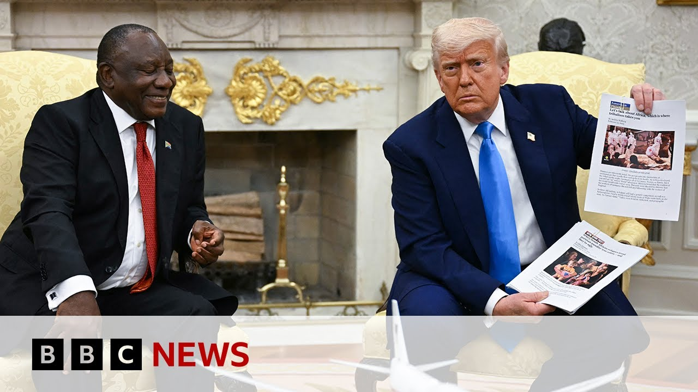

【特朗普关于南非“白人种族灭绝”的言论被核实 | BBC新闻】
Summary: The BBC fact-checked Donald Trump's claims of "white genocide" in South Africa, revealing misleading evidence and contrasting local perspectives on farm violence and racial tensions.
摘要： BBC核实了特朗普关于南非“白人种族灭绝”的说法，揭露了误导性证据，并呈现了当地人对农场暴力和种族问题的不同看法。

⏱️ Estimated Reading Time: 4 min
Earlier this week, there were tense scenes in the Oval Office between US President Donald Trump and his guest South Africa's leader Siril Ramaposa.
本周早些时候，美国总统特朗普与南非领导人西里尔·拉马福萨在椭圆形办公室发生了紧张的一幕。
Well, Mr. Trump says Mr. Ramaposa's government has been carrying out what he has described as genocide against South Africa's white farmers.
特朗普称，拉马福萨政府正在对南非的白人农民实施他所描述的“种族灭绝”。
Well, our correspondent in South Africa, Pumsa Fellani, went to the area which Trump, Mr. Trump says was proof of this genocide and uh she fact checked it.
BBC驻南非记者普姆萨·费拉尼前往特朗普声称能证明这一“种族灭绝”的地区进行了核实。
Let's have a look at what she found.
让我们看看她的发现。
Kill the white farmer and take their land.
“杀死白人农民，夺取他们的土地。”
A diplomatic meeting turned ambush.
一场外交会议变成了突袭。
America's Donald Trump makes incendiary comments about what it's like to be a white farmer in South Africa.
美国的唐纳德·特朗普对南非白人农民的处境发表了煽动性言论。
These are all people that recently got killed.
“这些都是最近被杀的人。”
His counterpart, President Sir Ramaporsa, uncomfortable but composed, sits through the so-called evidence of the claims.
他的对手西里尔·拉马福萨总统虽感不适但仍保持镇定，听完了这些所谓的证据。
These are burial sites right here.
“这些就是埋葬地点。”
Over a thousand.
“超过一千个。”
We've come to the location shown in that video played in the Oval Office.
我们来到了椭圆形办公室播放的视频中所显示的地点。
There are no graves.
这里没有坟墓。
There's no graveyard.
也没有墓地。
In fact, we now know that the crosses in that same video were part of a protest organized by a local community after the death of a couple that was killed here.
事实上，我们现在知道，视频中的十字架是当地社区在一对夫妇被杀后组织的抗议活动的一部分。
We're looking at Glenn and Vida Rafetti.
我们正在看格伦和维达·拉费蒂的案例。
Roland Collier, a farmer, is their nephew and tells me he is still haunted by the gruesome find.
农民罗兰·科利尔是他们的侄子，他告诉我，他仍被这一可怕发现所困扰。
They broke and ransacked the house, broken open the safes.
他们闯入并洗劫了房子，砸开了保险箱。
Um, yeah, it was quite a hectic scene.
嗯，是的，那是一个相当混乱的场景。
Despite the misleading use of the video, he says he's pleased violence on farms is receiving attention.
尽管视频被误导性使用，但他表示很高兴农场暴力问题受到关注。
So, will he be taking up Mr. Trump's refugee offer?
那么，他会接受特朗普的难民提议吗？
No, I wouldn't at this stage.
“不，现阶段我不会。”
I would definitely not think of going.
“我绝对不会考虑离开。”
Um, I still love this country enough um to be able to stay.
“嗯，我仍然深爱这个国家，愿意留下来。”
In a nearby village home to farm workers, residents were shocked by false claims this was the site of a white genocide.
在附近一个农场工人居住的村庄，居民们对这里曾是“白人种族灭绝”地点的虚假说法感到震惊。
Beth Mabaso was born here.
贝丝·马巴索出生在这里。
I've lived here since I was a little boy and this is a peaceful area.
“我从小就在这里生活，这是一个和平的地区。”
Nothing like those murders has happened in this community since.
“自那以后，这个社区再也没有发生过类似的谋杀案。”
And in South Africa, a country still recovering from a painful history of segregation.
而在南非，这个仍在从痛苦的种族隔离历史中恢复的国家。
Mr. Trump's political baiting has reminded many of how delicate race matters can be here.
特朗普的政治挑衅让许多人再次意识到这里的种族问题有多么敏感。
Pumza Fanani BBC News Normandine.
普姆萨·费拉尼，BBC新闻，诺曼丁报道。
That's Pumza Fellani there.
以上就是普姆萨·费拉尼的报道。
Well, if you go to the BBC News website, you can see more on that story because our team at BBC verify analyze those different claims that were made by President Trump in the Oval Office.
如果您访问BBC新闻网站，可以了解更多相关内容，因为BBC核实团队分析了特朗普总统在椭圆形办公室提出的不同说法。
You can see him there at that meeting with Sirill Ramosa.
您可以看到他在那里与西里尔·拉马福萨会面。
Now in it includes how he used the articles there to illustrate what he claimed were burial sites in South Africa.
其中包括他如何用那里的文章来说明他声称的南非埋葬地点。
Well, this in fact was a picture from the Democratic Republic of Congo.
然而，这实际上是刚果民主共和国的一张照片。